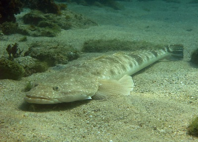

Poder visualizar las propiedades de los datos es un paso crítico en la exploración de datos y necesario para la comunicación efectiva de resultados. En esta página se detallan dos formas comunes en las que se pueden mostrar los datos de una sola variable continua en R: histogramas de frecuencia y diagramas de caja - bigotes.
Los datos de muestra utilizados a continuación son las longitudes (cm) de 80 peces capturados en un estuario en sitios con diferentes zonas de gestión (protegidas versus no protegidas) y costas (urbanizadas versus saludables).

Histogramas de frecuencia
Los histogramas de frecuencia representan con qué frecuencia caen los valores de una variable continua en ciertos rangos. Son una forma efectiva de visualizar el rango de valores obtenidos y la distribución de tus datos (es decir, ¿es simétrica o asimétrica?).
En primer lugar, descarga el conjunto de datos de muestra, Estuary_fish.csv, e impórtalo a R.
Fish <- read.csv(file = "Estuary_fish.csv")
Un histograma de frecuencia de la variable “Length” del data frame “Fish” se puede producir fácilmente con la función hist.
hist(Fish$Length)

De inmediato puedes ver que todos los peces tenían menos de 30 cm de longitud y que estos datos de longitud tienen una asimetría positiva: los peces pequeños son más frecuentes y los peces grandes son raros.
Puedes modificar el número de intervalos o el rango de cada intervalo con el argumento breaks. Esto cambiará el ancho y la forma del histograma. Por ejemplo, si deseas 15 intervalos, usarías:
hist(Fish$Length, breaks = 15)

Si deseas que cada intervalo tenga un rango de 2 cm, puedes usar breaks=seq(0,30,by=2), donde los números entre corchetes son el mínimo, el máximo y el rango para cada intervalo.
Gráficos de caja y bigotes
Un gráfico de caja y bigotes, también conocido como boxplot, es otra forma útil de visualizar la distribución de una variable continua. Se pueden crear fácilmente con la función boxplot. El argumento horizontal=TRUE hace que el eje único sea horizontal.
boxplot(Fish$Length, horizontal = TRUE)

El gráfico muestra la distribución de una variable indicando la mediana, los cuartiles, el máximo y el mínimo de la variable. Los bigotes superior e inferior representan los valores máximo y mínimo (excluyendo cualquier valor atípico que se indica con un círculo). La línea gruesa en negro es la mediana, y las cajas a cada lado de la línea de la mediana son los cuartiles inferior y superior.
Recuerda que la mediana es el valor que tiene el 50% de los valores mayores y el 50% de los valores menores. De manera similar, los cuartiles representan los valores con el 25% de los valores menores (el cuartil inferior) o el 25% de los valores mayores (el cuartil superior).
El gráfico de caja y bigotes indicará la asimetría en tus datos si la mediana no está equidistante de los cuartiles o de los valores máximo y mínimo. En este ejemplo, puedes ver que la mediana está más cerca del valor mínimo que del máximo (lo que indica que los valores bajos son más comunes).
Formateo de gráficos
Estos gráficos sencillos se pueden formatear utilizando las funciones básicas de formateo de R en el paquete de gráficos. El código a continuación muestra algunos de los comandos de formateo más comúnmente utilizados para tener un mayor control sobre tus gráficos.
Agregar etiquetas de ejes o títulos
Las etiquetas de los ejes se crean con los argumentos xlab y ylab. Los títulos se proporcionan con el argumento main.
hist(Fish$Length, xlab = "Fish length (cm)", main = "Frequency histogram of fish length")

boxplot(Fish$Length, xlab = "Fish length (cm)", main = "Box plot of fish length", horizontal = TRUE)

Usando el argumento main=NULL, se elimina el título, lo cual suele ser innecesario, ya que los detalles sobre lo que ilustra un gráfico suelen estar escritos en una leyenda debajo del gráfico.
Editar límites de los ejes
Los límites de los ejes se establecen mediante los argumentos xlim y ylim, donde se requiere un vector con los límites mínimo y máximo. Por ejemplo, para que cada uno de estos gráficos muestre los datos entre 0 y 40, se usaría:
hist(Fish$Length, xlab = "Fish length (cm)", main = "Frequency histogram of fish length", xlim = c(0, 40))
boxplot(Fish$Length, xlab = "Fish length (cm)", main = "Box plot of fish length", ylim = c(0, 40), horizontal = TRUE)
Ten en cuenta que ylim es necesario allí para establecer el rango de la variable de respuesta única (longitud del pez), aunque al final acabe en el eje horizontal después de usar el argumento horizontal=TRUE.
Alineación de los gráficos
Utiliza el argumento horizontal=TRUE para alinear el diagrama de caja horizontalmente; omítelo si deseas una alineación vertical.
Añadir color
Se puede agregar color a cualquier parte de los gráficos (ejes, fuentes, etc.) utilizando el argumento col. Hay más de 600 colores que se pueden representar en el gráfico; escribe colors() para ver los nombres de todo el rango.
Aquí simplemente cambiaremos el color del histograma.
hist(Fish$Length, xlab = "Fish length (cm)", main = "Frequency histogram of fish length", col = "red")

Más ayuda
Escribe ?hist y ?boxplot para obtener ayuda sobre estas funciones en R.
Autor: Stephanie Brodie
Año: 2016
Última actualización: Jun. 2023